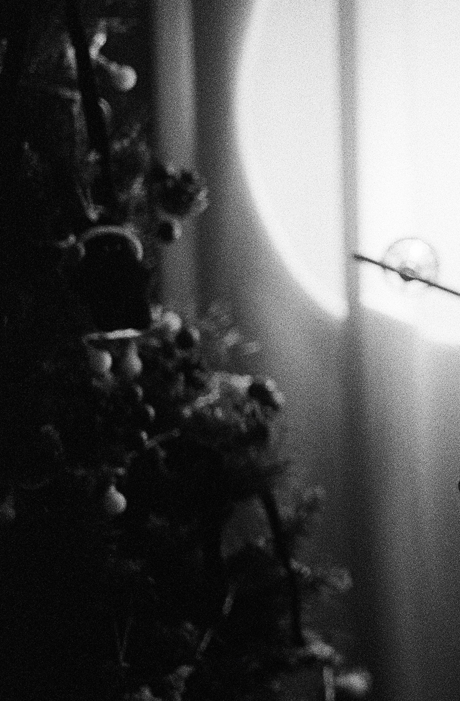
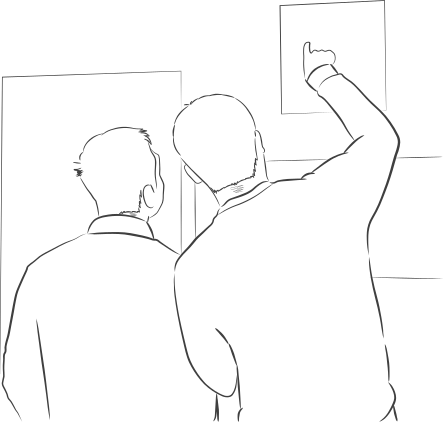

G-ARCH PROJECT

많이들 궁금해 하고 있을거에요. 회장님의 정체. 공개해주세요.
2017년부터 건축 모임 지아키를 운영하고 있는 택입니다. 건축을 전공하고 건축사무소에서 설계를 하다가 대학원에서 도시계획을 공부한 후에 지금은 시행사에서 일하고 있습니다.
많이 얘기했을 거 같아요. 어떻게 지아키를 만들게 됐는지. 그런데도 아직 많은 사람들이 궁금해하고 있어요. 어떻게 만들게 됐나요?
평소에 말하는 버전보다 좀 풀어서 준비를 했어요. 학부 4학년 때 아는 형이 독서 모임 운영을 한다 해서 참여를 했었어요. 그때 독서 모임에 참여했던 사람들 중에 다양한 직업을 가진 사람들이 많았어요. 그러면서 의사 모임이나 변호사 모임, 이런 게 있다는 걸 알게 됐고, 그러다보니 직업군 모임이 있으면 일적으로도 서로 도움 많이 받을 수 있다라는 걸 느끼게 됐죠. 그래서 자연스럽게 건축 모임도 있으면 좋겠다는 생각을 처음 했어요. 졸업까지는 학교 생활이 바쁘니까 모임을 만들어서 내가 운영할 것까지는 생각을 못했는데, 졸업하고 취직해서 직장에 적응을 하다보니 때가 됐다 하는 때가 있더라고요? 그래서 건축 모임을 만들고 싶다는 글을 트위터에 올렸는데 함께하겠다는 반응이 그냥 생각보다 꽤 있어서 2017년 8월에 9명이서 처음 종로바에서 만난 게 모임의 시작입니다.
6년 반이 지나서 회원도 9명에서 80여명이 되었어요. 이렇게 커질꺼라 예상했었나요?
규모에 대해서는 미리 생각한 건 전혀 없었어요. 건축하는 사람들이 서로 업무 내용 공유하고 도움도 얻고 퀴어 커뮤니티에도 좀 기여할 수 있는 게 있으면 좋겠다 하는 생각으로 한 건데, 지금 어느 정도 다 이루어지고 있어서 ‘상상한 방향대로 된 것 같다.’ 라고 생각해요.
그리고 제 성향상 딱 칼같이 자르는 거를 좋아하지 않아서, 전공 관련해서도 다양하게 모였어요. 관련한학과도 많은데, 누군가가 생각하는 ‘건축’으로 딱 잘라서 제한하고 싶진 않았어요, 같이 하면서 시너지도 나고 그렇잖아요.
맞아요, 사람들이 많이 놀라기도 해요. 생각보다 건축과 관련된 많은 직군이 섞여있어서요.
원래 원했던 바에 가까운 것 같아요.
그러고보니 6년 반이란 시간이 지난 만큼 나이도 전반적으로 올라간 느낌이 있어요.
음, 최근 들어온 사람들은 다 20대 후반이라서 딱히 그렇지도 않은거 같아요. 이런 모임이 필요하다고 느끼는 나이대가 있는 것 같아요. 한국 사회에서 대학을 졸업하고 취직하고 하는 나이들이 어느 정도 비슷하기 때문에 이런 모임이 필요로 하는 나이대가 있다고 생각을해요. 그 나이대가 한 20대 후반에서 30대 초반인 것 같고요.
맞아요, 생각해보니 그렇네요.
올해 좀 큰 변화가 있었어요. 운영진도 생기고, 규칙들도 생기고요. 쉽지 않은 결정이었을 거 같아요.
이 인터뷰를 보는 지아키 사람들 모두가 이 변화에 대해서 잘 알진 못할 거에요. 그래서 이 변화에 대해서 설명을 먼저 좀 할게요. 지난해까지는 제가 혼자서 모임을 운영을 해왔어요. 모임 안에서 뭔가 만들어보자는 생각에 몇 번 시도해보기도 했는데 혼자서는 쉽지 않았고요. 그리고 또 코로나 이후에 정기 모임에 참석하는 인원이 갑자기 많아지면서 혼자서는 정기 모임도 감당하기가 좀 어려워진 부분이 있어요.
그래서 오래된 회원 중에서 정민 님을 포함해서 몇 분에게 운영 지원해달라고 얘기를 하면서 운영진을 뽑았죠. 그러면서 올해의 인터뷰 프로젝트인 이달의지아키도 기획하고 시작했고요. 설계 일을 하는 사람들이 취미로 설계 프로젝트를 하는 거는 쉽지가 않잖아요. 그래서 뭘 할 수 있을까 고민하다가 아카이빙 개념으로 회원들이 하는 일에 대해서 인터뷰 연재를 해보자 한거였죠.
그리고 또 늘 하던 정기 모임 외에도 처음으로 올해 MT도 갔었고, 타 모임과 조인트 모임도 했고, 10월에 경리단길에서 진행됐던 야간 개장에도 저희가 참여를 했었고, 그리고 얼마 전에는 파티룸 빌려서 연말 파티까지. 이런 것들이 올해 처음 시도한거네요. 모임에 새로운 시도를 할 때마다 회원들이 잘 참여해 주고 있어서 저는 이 변화에 굉장히 만족하고 있습니다.
지아키를 운영하면서 좋은 순간들도 당연히 많았겠지만 힘든 순간들도 당연히 있었을 것 같아요. 이 기간이 결코 짧지 않잖아요?
모임 시작부터 코로나 전까지, 초기 2~3년에는 사람이 잘 모일 때도 있었지만 사람들이 거의 모이지 않을 때도 있었어요. 모임을 계획했다가 다들 사정이 있어서 못 나온다 이렇게 해서 저 포함 단 2명이 남아서 취소한 적도 있었고요. 그런데 저는 사실 20대 초반부터 게이 커뮤니티에 나와서 친구들을 사귀었고 건축 모임이 아니어도 더 자주 보는 친구들이 있었어요. 그래서 사람이 적게 모였을 때는 그냥 친구들하고 노는 게 더 재밌긴 하지만 그냥 봉사하는 마음으로 놀다 오자 이런 생각도 있었고 모임이 무산되면 귀찮아서 잘 됐다 이런 마음도 있었어요. 그래서 저하고 모임 사이에 적당한 거리감이 있었기 때문에 인원이 적다고 해서 좌절하지도 않았고, 그냥 꾸준히 모임을 할 수 있었던 것 같아요.
코로나 때도, 단톡방이 그동안 유지해오던 관성이 있어서 잘 유지가 되었고요. 흩어지지 않았죠. 코로나 이후에 모임에 사람이 많아지면서 운영진을 뽑아서 해결하려고 했었고요.
근데 오히려 운영진이 생기면서 제가 혼자서는 할 수 없는 것들이 가능해지니까 새롭게 벌이는 일들이 너무 많아진 거에요. 게다가 혼자서 생각하면 사실 이렇게 하자 하고 끝낼 일도, 여럿이서 같이 아이디어를 모으니까 결과적으로 제가 하는 일이 더 많아졌어요. 그런데 혼자 할 때는 일이 많아진 게 그냥 힘들기만 한데, 어쨌든 다 같이 하니까 이게 재밌었던 것 같아요. 좀 더 모임에 책임감도 가지게 되고요.
그런데 모임에 제가 힘을 너무 많이 쏟고, 모임도 저한테 너무 큰 부분이 된거죠. 모임을 오래 유지해 올 수 있었던 이유인 모임과 저의 거리감이 너무 사라진 게 오히려 문제가 됐어요. 그래서 모임에 대해서 사소한 부분에서도 조금 더 예민해지는 부분이 있고 스트레스를 받는 부분이 생기고요. 모임이 저한테 좀 더 작은 부분일 때는 전혀 문제가 없었던 것들도 문제처럼 느껴지고 그래서 최근에는 모임과 나 사이에 다시 건강한 거리감을 가져야 된다라는 생각을 가지고 있어요. 모임 자체보다는 좀 사람에 집중해서, 사람들을 보고 가려고 하고 있습니다.
저도 운영진이긴 하지만, 회장님인 택님에게 많이 의지하고 있어요. 그러다보니 떠넘기는 것도 많았던 것 같고요.
저에게 회장님은 그런 존재입니다.
그러면 ‘회장’이라는 왕관의 무게 잘 견디고 계신가요? 아니면 이 자리를 빌어 다른 사람에게 물려주고 싶은가요?
저는 사실 이걸 물어보고 싶었어요. 왕관의 무게가 좀 있다고 느끼나요?
저는 굉장히 있다고 느껴요. 이게 친목모임이긴 하지만, 그렇기 때문에 언제든지 내뺄수도 있는 거잖아요? 부담스러울 거 같기도 해요. 어쨌든 내가 만든 모임이니까.
전 사실 왕관이 없어서 무게가 없다고 생각했거든요.
이 모임의 장이라는게 리더나 보스처럼 어떤 프로젝트를 이끌어 가는 것은 아니지만, 어쨌든 80여명이 있는 모임의 장이잖아요. 그러면 전 많이 힘들 거 같긴 하거든요. 뿌듯하기도 하고. 그래서 왕관이라고 표현하거 같아요.
책임감 이런 거는 있겠지만, 저는 책임감 때문에 부담을 느끼지는 않는 수준이라고 생각을 해요. 아까도 이야기 했지만 모임을 꾸준히 운영하다 보면 자연스럽게 세대 교체가 된다고 생각해요. 지금도 진행중이고요. 내가 누구에게 주고 싶다는 생각은 별로 중요하지 않은 것 같고, 자연스럽게 세대가 교체되면서 모임을 운영하는 게 나보다 더 나은 사람이 있을 때는 자리를 내줘야 된다고 생각하고 있습니다.
우문현답이네요.
이제 커리어에 대한 얘기를 하고 싶어요. 처음에 소개해주신 것처럼 아틀리에에서 대학원으로, 또 지금은 시행사에 계시잖아요. 이 과정이 궁금해요.
제가 아틀리에에서 시행사로 오는 과정에 대학원도 있었고, 중간중간 단계들이 있었지만, 그 단계마다 새로운 목표가 생겨서 간 것은 아니고, 다 이어져 있어요. 그래서 조금 긴 이야기가 될 것 같네요.
처음 건축과에 가게 된 건, 한 건축가가 건축가에 대해서 소개한 글을 읽게 된게 계기였어요. ‘건축가는 무한한 자유와 처절한 고독을 두려워하지 말아야 한다.’ 사실 아직도 이 말의 뜻이 반도 안 와닿아요. 좀 멋있으려고 한 말일까 싶기도 하고 또 어떤 의미에서는 좀 알겠다 싶기도 한 부분이 있고, 꼭 그렇지만은 않은 것 같기도 하고 그래요. 이 말이 너무 아리송한 말이긴 한데 이 말에 너무 꽂혀서 건축과에 진학하게 됐어요. 그래서 1학년 때 그 건축가 밑에서 건축을 배웠었고요. 이때가 제가 건축에 대해서 제일 몰랐지만 그래도 애정은 제일 넘쳤던 시기였던 것 같아요. 그러다가 게이 커뮤니티에 본격적으로 나오면서 종로, 이태원과 학교 생활을 병행하다가 군 휴학까지 하고, 오랜만에 학교에 돌아갔어요. 그런데 건축과가 워낙 과제가 많고 또 학교 특성상 평가 기준이 좀 높아서 내 생활 없이 학교에 헌신하지 않으면 학교를 다닐 수가 없는 구조라고 생각을 했어요. 그러니까, 종로의 맛을 알고 나서는 학교를 도저히 다닐 수가 없더라고요. 나는 내 게이로서의 삶도 되게 중요한데 평생 이렇게 밤을 새가면서 살 수는 없는거죠. 그 당시에는 졸업한다고 해서 나아질 것 같지 않았거든요.
그래서 한 해를 더 학교를 다니고 나서 무작정 휴학을 하고 편입공부를 시작했어요. 그러면서 건축이 아니면 뭘 하면 좋을까 생각했죠. 이것저것 고민하다가 생각해낸 게 도시공학과였어요. 관심사 자체가 변한 것은 아니니까 그 정도의 변화를 생각한 거죠. 그래서 어떻게 면접까지는 갔는데 공교롭게도 이제 그때 이제 면접관으로 들어온 사람이 저희 건축과를 졸업한 선배였던거죠. 학부를 저희 학교에서 나오고, 유럽에서 도시를 공부하고 도시공학과 교수로 계신 분이었어요. 저한테 물어보시더라고요.
건축과를 나오고서도 도시를 공부하거나 할 수 있는데 왜 편입을 하려고 하느냐 하고요. 물론 떨어진 건 제 준비가 부족해서였지만, 이제 복학하면서는 어떻게든 일단 졸업을 한다는 목표로 학교를 다녔고, 도시는 석사로 공부하면 된다 이런 생각을 한거죠. 근데 또 어떻게든 또 졸업이 되긴 하더라고요. 그리고 과제가 많아서 밤을 새는 와중에도 또 종로 이태원에서 놀기도 하면서요.
그 전에 생각했던것 보다 두 가지가 양립할 수 있었네요.
맞아요, 생각보다 같이 가능했고 건축 공부의 재미도 다시 좀 붙였어요. 물론 건강은 굉장히 나빠졌지만요. 학교를 다니면서 ‘졸업까지만 하자’ 하고 생각했던 게 재미를 붙이니까 ‘3년 정도는 실무를 해보자’라는 된거에요.
이제 학교를 졸업하고 아틀리에 얘기가 나오는군요.
졸업할 때쯤에 가고 싶은 사무소 리스트를 한 5개 정도 추렸었어요. 연말에 졸업전시하고 조금 쉬는데 때마침 그때 리스트 중 한 사무실에서 사무실에서 채용 공고를 올린 거예요. 그래서 부랴부랴 포트폴리오를 정리를 해서 제출을 하고 면접을 보고, 바로 다음 날부터 출근을 하게 됐어요. 그러더니 그 다음주에 바로 PM을 하게 되고, 입사 1년만에 PM인 프로젝트의 완공을 봤죠. 그리고 건축사 시험 자격인 3년 경력을 채우고 나왔어요.
굉장히 정신없이 휘리릭 지나갔을 거 같은데요?
맞아요. 그렇게 3년 을 채우고 나왔는데, 퇴사할 떈 이미 어떤 대학원을 갈지 다 알아보긴 했었죠. 다만 바로 들어간 건 아니었고, 대학 동기들하고 팀으로 공모전을 했는데, 그게 대상을 받으면서 청년 건축가 팀으로 라이센스는 없지만 공간 운영하는 일도 했었고, 작은 주거 인테리어도 한 2개 정도를 했어요. 그런데 이제 그때 고생을 너무 많이 해서 빠르게 창업하거나 설계를 하는 것에는 큰 미련이 없어졌고, 또 그런 이유로 대학원에는 좀 쉬어야겠다는 생각으로 갔어요. 나를 소진하느라 여태껏 바빴으니까 이제는 대학원에 가서 좀 채워야겠다 생각을 한 거죠. 그래서 공부가 휴식이라면 좀 이상할 수 있지만 저는 정말로 휴식이 많이 됐습니다.
저는 택님을 오래보긴 했는데, 이런 과정을 잘 몰랐잖아요? 그래서 처음에 봤을땐, 이 사람은 설계를 계속할 사람인 것같다 했는데, 어느순간 대학원을 가고, 어느순간 시행사에 있어요. 제가 보기엔 그랬던거죠.
도시공부를 하는 건 학부 때 부터 이어진 생각이었는데 말이죠.
그러니까 말이에요. 그러면 대학원에서 집중했던 건 어떤거였어요?
대학원에서 집중했던 것도 사실 다 주거 대안에 관련된 것이었어요. 학부때도 그랬고, 아틀리에에서도 그랬어요. 그리고 시행사에서도요.
조금 더 길게 얘기하면 제가 학부 2학년 때 공모전에 참여를 했었는데 그때 주제가 미래 주거를 제안하는 거였어요. 제가 그때 제안 했던게 결혼하지 않고 같이 사는 사람들을 위한 주거였어요. 그리고 졸업할 때는 협동조합 주택을 했었고요. 협동조합 주택으로 사람들이 모여 살면서 커뮤니티 시설이 있는 것들을 설계를 했었고, 청년 건축가 팀으로 참여했던 공모전에서도 작업실을 공유하는 청년 예술가를 위한 주거를 계획을 했었어요. 이게 내가 남들과 같은 가족의 형태를 가지지 못할 거라는 생각 때문인지는 몰라도 다양한 가족 구성에 따른 다양한 주거 형태가 필요하다는 생각을 했어요. 우리나라의 주거의 형태가 너무 획일화되어 있잖아요. 가족의 형태는 다양해지고 있는데 주거의 형태가 그거를 뒷받침 못해주고 있다라는 생각이 강했고 그래서 그런 것들을 실험하는 거를 학교에서든 공모전에서든 꾸준히 해왔어요. 공교롭게도 설계사무소를 다닐 때 소장님도 비슷한 생각을 가지고 있었어서 제가 사무소에서 마지막에 맡아서 설계를 했던 프로젝트도 좀 비슷한 결의 공유 주거에 가까운 프로젝트였어요.
그리고 대학원에 갈 때도 주거 대안을 만드는 일을 하고 싶다는 거에는 변함이 없었기 때문에 졸업 논문도 청년 주거 정책 관련해서 주거 정책이 다양한 가족 구성원을 다 반영하고 있느냐, 결혼하지 않은 청년과 결혼한 청년 사이에 어떻게 정책이 다르게 효과를 미쳤느냐, 이런 걸 연구했었어요. 졸업할 때도 사실은 주거 대안에 대해서 다양한 시도들을 하는 회사들로 진로를 생각하고 있었고요.
그런데 지도 교수님이 셰어하우스를 실제로 운영하기도 하셨고 부동산 시장 상황에 대해서 조금 혜안이 있으신 분이세요. 그래서 부동산 상황이 나빠지면 이제 주거와 관련해서 실험적인 사업을 하고 있는 곳들은 좀 어려워질 가능성이 높고 지금 그런 쪽으로 바로 가기보다는 쭉 진행하고 있는 안정적인 사업이 있는 시행사에서 경험을 좀 쌓고 가는 것이 더 좋겠다라고 얘기를 해 주셨고 저도 거기에 대해서 동의를 한거죠. 딱 마치 제가 지금 다니고 있는 시행사에서 도시주택공사와 매입임대주택 사업을 하고 있는데 사람을 구하는거에요. 그래서 경력 쌓기에도 안정적이고, 프로젝트의 성격도 제가 관심있는 방향이여서 제가 이제 입사하게 되었죠.
한 흐름안에 있다고 하더라도 택님이 속해져 있는 소속이 바뀌는 순간에는 또 다른 심정들도 있었을 꺼 같아요. 제가 택님을 보았을 땐, 확실하지 않은 건 하지 않는 성격인 거 같아서, 어떤 확신이 있었을 거 같다는 생각이 들어요.
외부에서 보면 아까 얘기했듯이 커리어도 전공도 계속 바꾸는 사람처럼 보일 수 있지만 실제로는 한 가지 일만 하고 있는 거거든요. 그러니까 캐드를 잡고 있냐 사업수지표를 들고 있느냐의 차이는 있겠지만, 꾸준히 주거 일만 하고 있어요. 뭐 하는 일이 다르니깐 다른 일이라고 할 수도 있겠지만요.
확신이라고 하면, 변화의 순간에 나에 대한 확신은 있어요. 그러니까 뭘 해도 어떻게든 잘 해왔으니까 앞으로도 잘하는 게 당연하다. 그런데 일에 대해서는 확신하지 않아요. 건축이든 시행이든 모두 확신할 순 없죠. 그리고 변화를 맞이했을 때는 그냥 뭐 빨리 파악하고 적응하려고 노력하는거죠. 그만둘 때까지의 과정과 마음이 더 중요하지 시작할 때는 이미 정해진 거니까 그냥 실행하면 된다 이런 생각으로 하고 있습니다.
대학을 졸업하고 사회생활을 처음 시작했을 때의 택님과 지금 택님 사이에 일을 대하는 마음에서의 변화가 있을까요?
처음에 그냥 변화라고 질문지를 주셔서, 나이가 들었고, 술이 줄었고, 더 잘생겨졌다. 라고 썼는데요.
규모에 따라 차이가 있겠지만 건축은 이제 사업이 시작하고 끝나는 데 소요되는 기간이 길다 보니까 처음부터 끝까지 한 번 경험하는 게 아주 짧아도 1년이고 길면 3년 5년 이렇게 봐야 되는데 각 단계별로 해야 되는 일이 정해져 있고 또 경험해보지 않으면 알기 어려운 부분이 많아서 경험이 쌓이면 업무적인 능력이 올라갈 수밖에 없는 일이라고 저는 좀 생각하거든요. 그래서 나는 이제 다 알아라고 자만하는 순간부터는 성장도 없겠지만 다행히 아직도 갈 길이 멀었다 생각하고 있고 그래도 처음 일을 시작할 때보다는 건물이 지어지는 데 필요한 것들에 대해서 몇 번 사이클을 돌았기 때문에 그걸 좀 파악하게 된 거. 약간 어느 정도 이다음에는 어떤 게 있겠구나 하는 것들을 좀 예상할 수 있게 된 게 가장 업무적으로 큰 변화일 것 같고 또 하나는 이제 삶의 난이도가 좀 줄어드는 것 같아요.
그러니까 질문지를 받고 이제 학부랑 설계사무소, 청년건축가 팀, 대학원, 시행사 쭉 돌아보면서 언제가 제일 힘들었는지를 좀 생각해 봤는데 사실 어려운 정도는 다 비슷비슷했던 것 같거든요. 근데 내가 힘들었던 정도는 시간 순서대로 조금 덜 힘들게 되는 것 같아요. 그래서 이게 예전엔 너무너무 힘들었지만 사실 지금 그때로 돌아가면 더 쉽게 할 수 있을 것 같고 그런 부분들이 약간 고생한 덕분에 삶의 난이도가 좀 낮아졌다 생각하고 있고, 지금 고생하고 있는 것도 미래에 고생할 때에 좀 덜 힘들게 지나갈 수 있게 되는 자양분이라고 한번 믿고 싶습니다. 제발요.
이제 사랑꾼 택님에 대해서 알아보려고 해요. 지금 애인의 군 생활을 기다려준 곰신이라고 알고 있어요. 쉽지 않다고들 하잖아요. 어떻게 잘 기다리셨을까요? 비결이 있을까요?
일단 지금 애인이 22살일 때 처음 만났는데, 다음 달에 군대를 간다고 했었어요. 그래서 군대를 가기 전까지 잘 만났고, 군대를 갔으니까 편지를 써줬고, 휴대폰을 쓰게 된 후에는 카톡 하고, 휴가 나오면 만나고 그렇게 했어요. 쉬었어요.
너무 감동적인 대답이에요. 비결? 그런게 필요할까요? 그냥 있으니까 했다. 너무 감동적인데요?
어떤게 감동적이죠?(웃음) 왜냐하면 기다릴 수 있는 비결이 있을까요라고 물어봤는데 비결이 있었다기보다는 잘 기다릴 수 있는 시기에 잘 만난 거예요. 코로나 시기이기도 했고 대학원에 막 입학한 시기기도 했어서, 초반에 너무 많은 시간을 쏟지 않고서 좀 오랜 기간 알아갈 수 있는 게 저는 좋았었던 것 같아요.
저에게는 감동 그 자체에요.
지아키에서 온라인 정모를 할때 연애고민상담을 꼭 하는데 명쾌하게 해주시잖아요? 만났을 때도 연애상담을 하는 친구들도 많고요. 그럴 때마다 명쾌하게 한 줄로 말을 해줘요. 택님이. 이번에는 비법이 있을 거 같은데요?
저는 누누이 얘기를 많이 했지만 20살에 처음 연애를 시작한 이후로 연애를 오래 쉰 적이 없어요. 20대에 연애하지 않았던 기간을 다 합쳐도 1년이 안 될 거고요. 다양한 사람을 많이 만났어요. 20대때는 친구들과 대화 할 때 만나는 사람 얘기를 꼭 하잖아요. 그러면서 서로 고민 상담을 많이 해주고 같이 ‘걔는 왜 그랬을 것이다’ 이런 추측하고요, 저희는 대화의 팔할이 이런거였어요. 그렇게 10년을 살아오니 그냥 웬만한 상황에 있어서는 답이 잘 나오는 것 같아요. 그런데 보통은 연애 고민 있는 사람들도 대부분 답을 다 알아요. 이제 머리로는 알아도 마음으로는 안 되는 게 연애니까. 연애를 잘하는 비법이라고 하면 마음대로 하지 않으면 됩니다. 머리로 하면 돼요.
싫어요! 마음대로 할거에요!
물론, 제가 마음대로 하지 않았냐 하면 그런 건 아니죠. 저는 사람 보는 눈이 그렇게 까다롭지가 않았고 서로 좋아하는 것 같으면 좀 만나는 편이어서 알아가던 중에 상대가 연애의 마음이 없는 것 같다 판단하면 마음 접는 것도 굉장히 빠르고 그래서 연애를 시작하는 거는 어렵지 않았어요. 물론 그러다 보니까 이상한 사람도 만나지만 좋은 사람도 만나고, 좋은 사람 만나면 좀 길게 연애하게 되고 그랬던 것 같고요. 또 평균적으로 연애 기간은 나이가 들수록 좀 길어지는 것 같아요. 성격이 좋아져서인지 힘이 떨어져서인지는 잘 모르겠지만 상대한테 좀 덜 지랄 맞게 행동하고 상대가 좀 지랄 맞게 굴어도 좀 참고 그렇게 되는 것 같아요.
그쵸 많이 참아야죠. 참아야겠죠…
그럼 마지막 질문이에요. 지아키에 대한 마음이 누구보다 크지 않을 수 있지만 확실히 남다를 것 같긴 해요. 제가 생각하는 마음과는 또 다를 것 같고요. 지아키에 대해서 좀 애정어린 말을 부탁해볼게요.
저는 지금은 아까 얘기했듯이 지아키와 건강하게 거리를 두는 중이어서 애정어린 말은 좀 곤란하고요. 지아키를 같이 운영하느라 고생한 운영진과 또 이제 한 해에 많이 참여해 주신 회원분들께 감사하다는 말을 하고 싶습니다. 회원분들이 가끔 모임이나 행사가 끝나면 감사하다는 말을 하기도 하고 자랑스러운 모임이다 얘기를 할 때가 있어요. 그럴 때 정말 너무 큰 힘이 되고 그래서 따뜻한 연말 되시고 새해 복 많이 받으셨으면 좋겠네요. 그리고 한 해 동안 이달의 지아키를 읽어주신 분들과 인터뷰에 흔쾌히 응해주신 회원분들, 그리고 이달의지아키를 상상 이상으로 아주 멋지게 만들어준 정민이까지 모두 정말정말 감사합니다.
인터뷰 진행 및 사진 : 정민 일러스트 : 호생